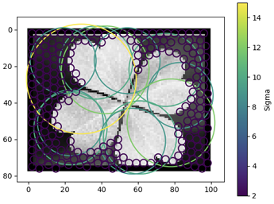
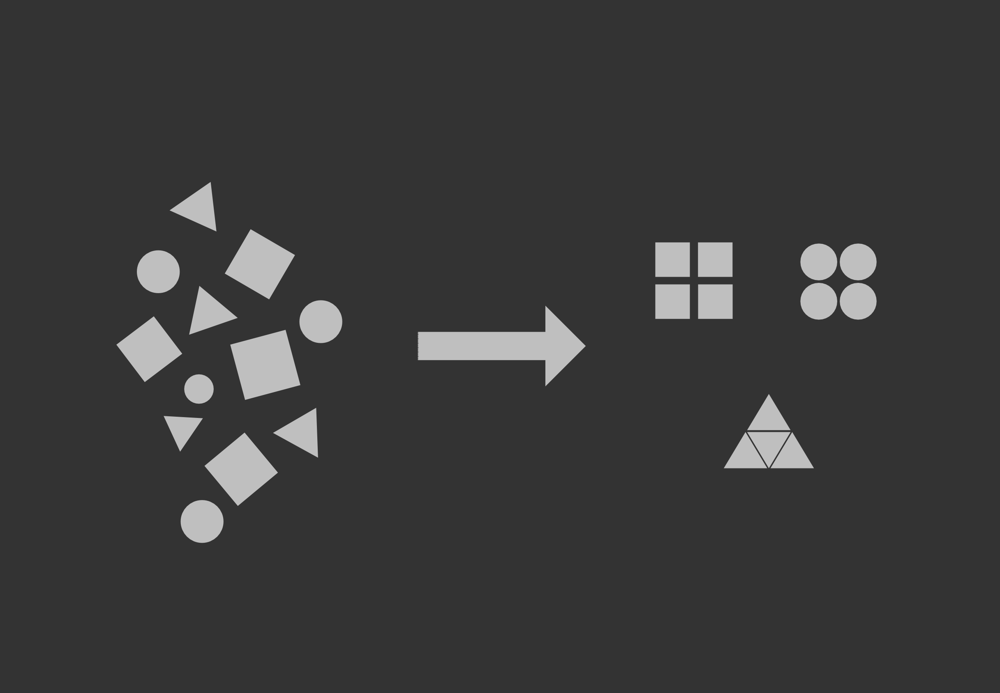

Michael Sheroubi
Relevant Experience
Machine Learning Engineer 2024 (9 months)
EdgeTunePower
Data Analyst 2023 (6 months)
Asurion LLC | Roubi
Data Analyst & Support 2020-2023
Clearmind International | Roubi
Data Warehouse Engineer 2019-2020
Trellis Social Enterprise | UBC
Comparing Spatial Reasoning in Discrete Environments
From Mistral Game Jam - Hackathon by Spotlight Paris (Entrepreneur First)
This study compares the performance of a Multimodal Model (Pixtral Large) and a Large Language Model (Mistral Large) in navigating identical game states. The Multimodal Model processes image based inputs, while the LLM relies on textual descriptions derived from the same images. The evaluation focuses on their decision-making, reasoning, and adaptability to provide insights into their respective strengths and limitations
Four Leaf Clover Detection
Computer Vision, Machine LearningUsing image processing to detect four leaf clovers
This project involves using computer vision techniques to detect four leaf clovers in images. The algorithm processes the image to identify and count the number of leaves, distinguishing four leaf clovers from the common three leaf variety. This project demonstrates the application of image processing and machine learning in a fun and practical way.
Roubi Analytics
Founder & CTO Data & AI Research & Consulting
This company started as a way to help small businesses make data-driven decisions & build out their data infrastructure. With time I acquired bigger clients with multiple recurrent contracts working on AI projects.
After a personal shift in priorities, the company now focuses on supporting AI research and deployment in critical systems & infrastructure.
I have since expanded the company to include a small team of researchers and engineers, with our ethos being "AI for Good".
Run-AI
AI, Computer Vision, Machine Learning Using OpenCV to train a Convolutional Neural Network
This AI is designed to play the popular flash game "Run". I acted as sole/principal developer for this project. Using OpenCV's edge detection and a movemement vector as input, an image classification CNN, AlexNet, was fed hours of gameplay data to train the model. This project was meant to serve as an introduction into Machine Learning, but turned out to also be a great lesson in computer vision and image processing.
TALK TO ME ABOUT THIS!
GovDB
Large Scale Web-Scraping, Vector Databases, Search Engine Vector Database housing meeting minutes from municipal governments accross Canada
Designed to help contractors find and bid on government contracts. The database is updated routinely with meeting minutes from municipal governments across Canada. The search engine uses a vector database to find relevant documents based on user queries. Documents are split into chunks and converted into vector embeddings.
Text-Based Clustering
LLMs, Nature Language Processing Use cosine similarity to create clusters from tokenized text
Often when working with large text datasets it is difficult to organize / categorize this data without pre-existing labels. By using the state of the art embeddings, we can find communities in the data by computing the cosine similarity between pairs.
Sudoku 
Algorithms and Data Structures, Problem Solving, P vs NP Failed attempts at solving sudoku in polynomial time
Periodically I to try and find an algorithm for a sudoku solver in polynomial time. One of my latest attempts involved converting a sudoku board into a system of equations and attempting to solve that. Other attempts included starting with a completed board and shuffling rows and columns (like a rubix cube) to match hints on starting board. I eventually hit a wall, but every idea is always very exciting. I obsessively chase each idea and enjoy each attempt.
TALK TO ME ABOUT THIS!
Analog Clock Reader 
Computer Vision, Problem Solving, Test AutomationRead time from an Analog Clock
The purpose of this project is to develop an algorithm for analog clock identification and to implement a program that would be able to read a given image or feed and return the value displayed. This is achieved broadly in three steps: find the clock, identify the centre, and highlight hands. The code utilizes Canny edge detection with Hough transform, and by calculating the angles between the hands to return the time. In the future, the code can be tweaked to read any kind of analog instrument, like gauge readers.”.
Benchmarking graph database performance 
Databases, SQL/NoSQL, Query OptimizationHonours Thesis
Comparing the performance of Neo4j and SQL Server inside a social media application. The first phase involved data modelling, making application architecture decisions, and generating & importing data. The focus shifted towards designing queries to get information from the social network. The final phase was creating test procedures that collected perfomance data for each database.
Document-Based QnA (RAG)
Langchain, LLMs, Vector Databases Retrieval Augmented Chat Agent powered by Llama2-7b and langchain
Just another RAG agent... built a few variations since this one.
Data Analysis: Video Game Sales
Data AnalysisBreakdown of video game sales from 1980 - 2020
Album Central
Web DevelopmentDjango Web App for reviewing albums
Nova-Graph 
Databases, Graph Theory, Natural Language ProcessingGraph Theory and NLP Research
A new approach towards building the "memory" of a virtual agent, NOVA. The aim is to create a knowledge-graph in high-dimensional space. Nodes would form relationships based on their position in this space. Their position in this space will change based on input from training texts. In short, each word would be defined by its neighbours inside this graph. The challenge is how to extract meaningful relationships and nodes from a piece of text (Big NLP Problem 1) and how to display query results in a meaningful output (NLP Problem 2).
TALK TO ME ABOUT THIS!
Contact: Email: devsheroubi [at] gmail.com Github: @msheroubi
Education
MScT Artificial Intelligence and Advanced Visual Computing
Ecole Polytechnique - IP Paris
Expected Graduation 2026
BSc. Honours Computer Science
University of British Columbia
Minor in Mathematics
Specialization in Data Science
GPA 3.90/4.33
CompTIA Security+
Google Data Analytics
Neo4j Certified Professional
Skills
Automation & Scripting Reinforcement Learning Advanced Research Machine Learning Data Analysis ETLTool Box
Languages: Python SQL Java RLibraries / Frameworks: PyTorch
Pandas Gym OpenCV TensorFlow Django
Other: Excel Git
Areas of Interest Deep Reinforcement Learning
Natural Language Processing Artificial Intelligence
Graph Theory
Capstone Peer Evaluations
Personal Statement
In every position I have held, the scope of my responsibilities has always grown broader than the job description.
When I see an opportunity to improve an existing process, I take the initiative to do so even if it's on personal time.
Most of my technical experience comes from me taking initiative in finding the optimal solution to both
new and known challenges.
During my time at Asurion, I wrote various Python scripts to help scrape and
wrangle data to prepare data going into a machine learning classifier. Almost all these projects
were developed on personal time and were later added to the production workflow. The apex of these
projects was the development of my own classifier powered by a large language model. From gathering
and preparing data to training and testing the model, I was the primary contributor to this ineligibility
classifier which has since been deployed into production.
I strive to develop a combination of technical, business, and interpersonal skills which allow me to adapt to the complexities of different roles.
Through my time at Clearmind, I collaborated with people from various teams & backgrounds, which
greatly enhanced my communication and presentation skills. The ability to communicate technical
information effectively allowed me to fit seamlessly with different departments ranging from Sales and
Marketing to IT and Management. I was the primary stakeholder in muplitple major projects during my time at Clearmind, which taught
me the importance of project management and the value of a well defined scope.
I am a self-starter who is always looking for ways to improve and learn. I like what I do and I am always looking for ways to do it better.